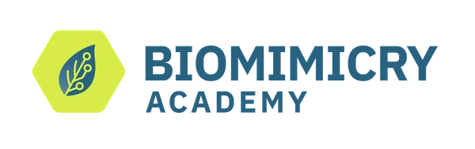
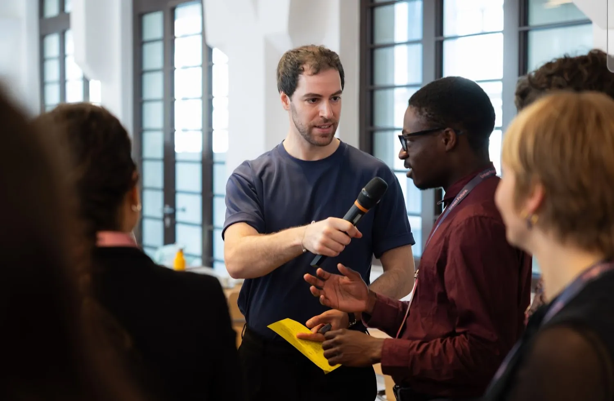
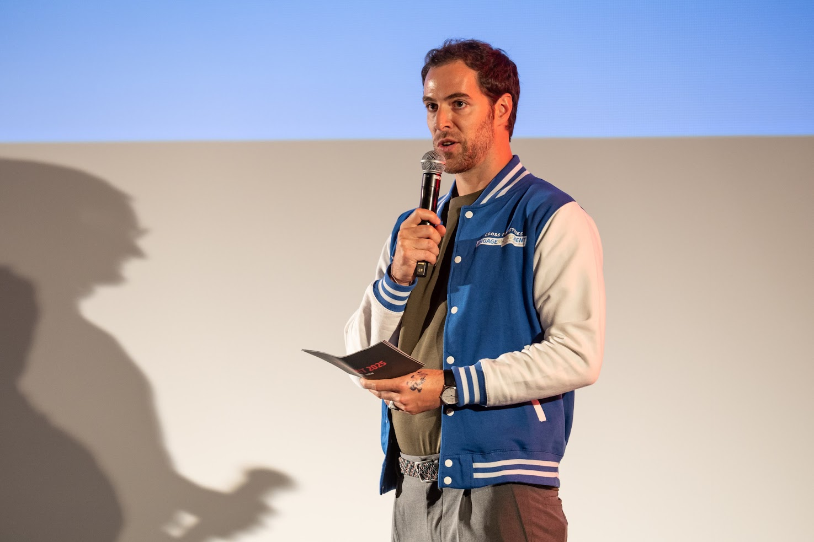
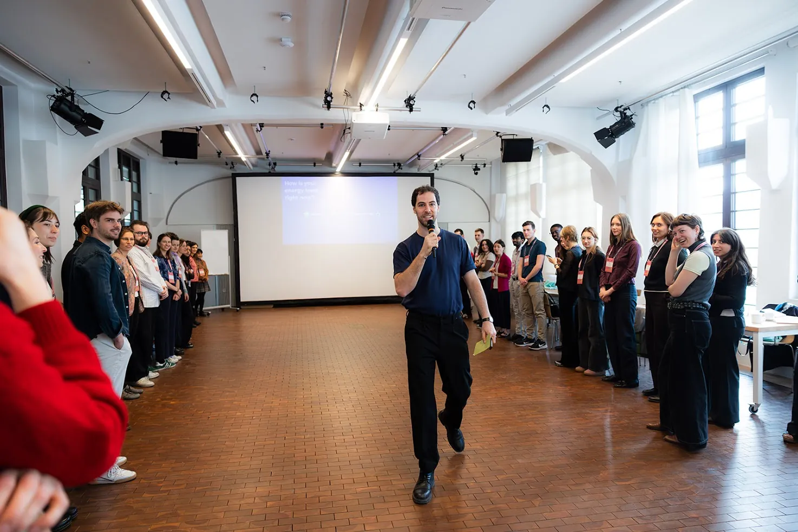

Alle laufen.
Aber wohin?
Initiativen konkurrieren, Prioritäten wechseln und ein gemeinsames Zielbild fehlt. Du wünschst dir einen Kurs, der Entscheidungen leichter macht.
Für Menschen, die Organisationen verändern
Du willst Zukunft gestalten. Mit einem klaren Kurs, einem starken Team und Veränderung, die im Alltag ankommt.
Ich begleite dich dabei, Menschen, Organisation und Technologie in Bewegung zu bringen. Gemeinsam. Wirksam. Mit der Natur als Vorbild.
Unverbindlich kennenlernen. Gemeinsam Klarheit gewinnen.

Ausgewählte Stationen, Projekte und Netzwerke meiner Arbeit.
Kommt dir das bekannt vor?
Die Strategie steht. Die Tools sind da. Und trotzdem bleibt das Gefühl: Wir kommen nicht wirklich voran.
Initiativen konkurrieren, Prioritäten wechseln und ein gemeinsames Zielbild fehlt. Du wünschst dir einen Kurs, der Entscheidungen leichter macht.
Teams arbeiten in Silos. Rollen bleiben unklar und Abstimmungen kosten Kraft. Du willst, dass Menschen Verantwortung übernehmen und zusammenwirken.
Neue Prozesse oder KI-Werkzeuge sind verfügbar, werden aber kaum gelebt. Du brauchst Veränderung, die Menschen verstehen und mitgestalten können.
Veränderung sollte Menschen stärken – und ihre Energie für das Wesentliche freisetzen.

Ein Gegenüber. Ein gemeinsamer Weg.
Wer Veränderung trägt, muss viele Perspektiven zusammenbringen. Das kann sich einsam anfühlen. Du musst diesen Weg nicht allein gehen.
Ich bin Ilya. Seit 2019 begleite ich Menschen und Organisationen dabei, aus komplexen Herausforderungen gemeinsame Handlungsmöglichkeiten zu entwickeln – in Unternehmen, Verwaltung und Wissenschaft.
Als Coach, Facilitator und Senior Consultant für Organizational Change Management bei adesso SE verbinde ich systemisches Denken mit praktischer Umsetzung. Mein Kompass: Organisationen als lebendige Systeme verstehen.
Dein Anliegen gibt die Richtung vor
Kein Standardprogramm. Wir verbinden die Ansätze, die deiner Situation und den Menschen in deiner Organisation gerecht werden.
Ein gemeinsames Zielbild, nachvollziehbare Entscheidungen und ein Weg, den deine Organisation mittragen kann.
Organisationsdiagnose, Change Architecture und Organisationsentwicklung: Wir verbinden Strategie, Kultur und Strukturen und machen die nächsten Schritte konkret.
Über deinen Wandel sprechenFührung, die Orientierung gibt. Teams, die Verantwortung übernehmen. Räume, in denen echte Zusammenarbeit entsteht.
Leadership Coaching, Teamentwicklung und Facilitation: Wir klären Rollen, gestalten tragfähige Entscheidungswege und erproben neue Routinen im Alltag.
Über dein Team sprechenDigitale Werkzeuge und KI, die einen Platz im Arbeitsalltag finden – weil Menschen ihren Nutzen verstehen und sich sicher fühlen.
Digital Transformation, AI Adoption und Public Innovation: Wir verbinden Beteiligung, Kommunikation und Lernformate mit den tatsächlichen Anforderungen deiner Organisation.
Über dein Vorhaben sprechenDu suchst einen Impuls, der im Kopf bleibt? Keynotes und Workshops zu Flow, regenerativer Führung und der Zukunft der Arbeit. Auf Deutsch und Englisch.
Keynote anfragenVom ersten Gespräch zur Veränderung
Du brauchst noch keinen fertigen Auftrag. Ein Anliegen und die Bereitschaft, gemeinsam hinzuschauen, reichen für den Anfang.
Wir sprechen über deine Situation: Was bewegt dich? Was soll anders werden? Im unverbindlichen Erstgespräch klären wir, ob und wie ich dich unterstützen kann.
Dein Ergebnis: eine erste OrientierungWir entwickeln ein gemeinsames Zielbild und einen passenden Rahmen. Du weißt, woran wir arbeiten, wen wir einbeziehen und woran wir Fortschritt erkennen.
Dein Ergebnis: ein konkreter gemeinsamer PlanWir bringen Veränderung in den Alltag. Mit Beteiligung, konkreten Experimenten und Feedback schaffen wir neue Routinen und passen den Weg gemeinsam an.
Dein Ergebnis: nächste Schritte, die getragen werdenVeränderung hat viele Gesichter
Jede Organisation ist anders. Diese Einblicke zeigen, wie ich Menschen, Strukturen und Technologie in unterschiedlichen Kontexten zusammenbringe.

ZusammenarbeitADAC IT Services · 2026
Systemische Begleitung und Organisationsdiagnose in einem skalierten Entwicklungsteam.
Der BeitragKlarheit über Rollen, Entscheidungen und Strukturen im laufenden Betrieb.

KI-Transformationadesso SE · seit 2026
Orchestrierung der internen KI-Transformation als Program Orchestrator im Programm AI Force.
Der BeitragAnschlussfähigkeit zwischen Strategie, Initiativen und Umsetzung.

Public InnovationITZBund · seit 2025
Agile Begleitung, Change Management und Teamentwicklung bei der Modernisierung der Haushaltsverfahren des Bundes.
Der BeitragOrientierung und operative Wirksamkeit in einem anspruchsvollen Umfeld.
Die Bilder zeigen Einblicke in meine Workshop- und Speaker-Arbeit; sie sind keine Aufnahmen aus den genannten Mandaten.
Wofür du losgehst
Stell dir vor: Dein Team weiß, wohin es geht. Menschen bringen sich ein. Neue Arbeitsweisen werden selbstverständlich.
Wenn Orientierung und Beteiligung fehlen, können Initiativen versanden und engagierte Menschen ihre Energie verlieren. Lass uns die Bedingungen schaffen, unter denen dein Wandel Wurzeln schlägt.
Deinen ersten Schritt machenEin Gedanke kann etwas verändern
Jeder Wandel beginnt mit einer Verbindung
Erzähl mir, wo du gerade stehst. Gemeinsam finden wir heraus, was dein nächster sinnvoller Schritt sein kann.
Schreib mir für ein unverbindliches Erstgespräch oder eine Anfrage zu Coaching, Organisationsentwicklung, Workshops oder einer Keynote.
ilyalex.yacine@gmail.comIch freue mich auf deine Perspektive.
Ilya
Ein paar Zeilen reichen für den Anfang.